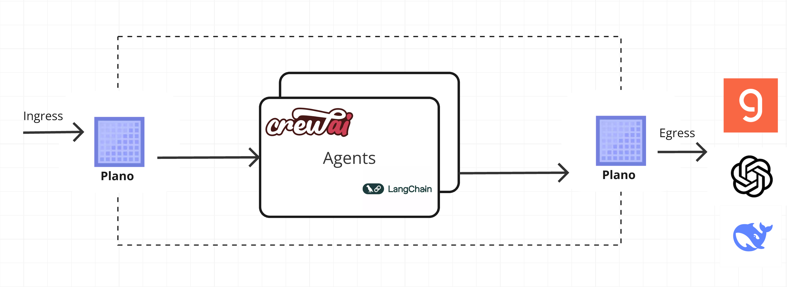

Request Lifecycle
Below we describe the events in the lifecycle of a request passing through a Plano instance. We first describe how Plano fits into the request path and then the internal events that take place following the arrival of a request at Plano from downstream clients. We follow the request until the corresponding dispatch upstream and the response path.
{kind=link}

Network topology
How a request flows through the components in a network (including Plano) depends on the network’s topology. Plano can be used in a wide variety of networking topologies. We focus on the inner operations of Plano below, but briefly we address how Plano relates to the rest of the network in this section.
Downstream(Ingress) listeners take requests from upstream clients like a web UI or clients that forward prompts to you local application responses from the application flow back through Plano to the downstream.
Upstream(Egress) listeners take requests from the application and forward them to LLMs.
High level architecture
Plano is a set of two self-contained processes that are designed to run alongside your application servers (or on a separate server connected to your application servers via a network).
The first process is designated to manage HTTP-level networking and connection management concerns (protocol management, request id generation, header sanitization, etc.), and the other process is a controller, which helps Plano make intelligent decisions about the incoming prompts. The controller hosts the purpose-built LLMs to manage several critical, but undifferentiated, prompt related tasks on behalf of developers.
The request processing path in Plano has three main parts:
Listener subsystem which handles downstream and upstream request processing. It is responsible for managing the inbound(edge) and outbound(egress) request lifecycle. The downstream and upstream HTTP/2 codec lives here. This also includes the lifecycle of any upstream connection to an LLM provider or tool backend. The listenser subsystmem manages connection pools, load balancing, retries, and failover.
Bright Staff controller subsystem is Plano’s memory-efficient, lightweight controller for agentic traffic. It sits inside the Plano data plane and makes real-time decisions about how prompts are handled, forwarded, and processed.
These two subsystems are bridged with either the HTTP router filter, and the cluster manager subsystems of Envoy.
Also, Plano utilizes Envoy event-based thread model. A main thread is responsible for the server lifecycle, configuration processing, stats, etc. and some number of worker threads process requests. All threads operate around an event loop (libevent) and any given downstream TCP connection will be handled by exactly one worker thread for its lifetime. Each worker thread maintains its own pool of TCP connections to upstream endpoints.
Worker threads rarely share state and operate in a trivially parallel fashion. This threading model enables scaling to very high core count CPUs.
┌─────────────────────────────────────────────────────────────────────────────────────┐
│ P L A N O │
│ AI-native proxy and data plane for agentic applications │
│ │
│ ┌─────────────────────┐ │
│ │ YOUR CLIENTS │ │
│ │ (apps· agents · UI) │ │
│ └──────────┬──────────┘ │
│ │ │
│ ┌──────────────────────────────┼──────────────────────────┐ │
│ │ │ │ │
│ ┌──────▼──────────┐ ┌─────────▼────────┐ ┌────────▼─────────┐ │
│ │ Agent Port(s) │ │ Model Port │ │ Function-Call │ │
│ │ :8001+ │ │ :12000 │ │ Port :10000 │ │
│ │ │ │ │ │ │ │
│ │ route your │ │ direct LLM │ │ prompt-target / │ │
│ │ prompts to │ │ calls with │ │ tool dispatch │ │
│ │ the right │ │ model-alias │ │ with parameter │ │
│ │ agent │ │ translation │ │ extraction │ │
│ └──────┬──────────┘ └─────────┬────────┘ └────────┬─────────┘ │
│ └──────────────────────────────┼─────────────────────────┘ │
│ │ │
│ ╔══════════════════════════════════════▼══════════════════════════════════════╗ │
│ ║ BRIGHTSTAFF (SUBSYSTEM) — Agentic Control Plane ║ │
│ ║ Async · non-blocking · parallel per-request Tokio tasks ║ │
│ ║ ║ │
│ ║ ┌─────────────────────────────────────────────────────────────────────┐ ║ │
│ ║ │ Agentic ROUTER │ ║ │
│ ║ │ Reads listener config · maps incoming request to execution path │ ║ │
│ ║ │ │ ║ │
│ ║ │ /agents/* ──────────────────────► AGENT PATH │ ║ │
│ ║ │ /v1/chat|messages|responses ──────► LLM PATH │ ║ │
│ ║ └─────────────────────────────────────────────────────────────────────┘ ║ │
│ ║ ║ │
│ ║ ─────────────────────── AGENT PATH ──────────────────────────────────── ║ │
│ ║ ║ │
│ ║ ┌──────────────────────────────────────────────────────────────────────┐ ║ │
│ ║ │ FILTER CHAIN (pipeline_processor.rs) │ ║ │
│ ║ │ │ ║ │
│ ║ │ prompt ──► [input_guards] ──► [query_rewrite] ──► [context_builder] │ ║ │
│ ║ │ guardrails prompt mutation RAG / enrichment │ ║ │
│ ║ │ │ ║ │
│ ║ │ Each filter: HTTP or MCP · can mutate, enrich, or short-circuit │ ║ │
│ ║ └──────────────────────────────────┬───────────────────────────────────┘ ║ │
│ ║ │ ║ │
│ ║ ┌──────────────────────────────────▼───────────────────────────────────┐ ║ │
│ ║ │ AGENT ORCHESTRATOR (agent_chat_completions.rs) │ ║ │
│ ║ │ Select agent · forward enriched request · manage conversation state │ ║ │
│ ║ │ Stream response back · multi-turn aware │ ║ │
│ ║ └──────────────────────────────────────────────────────────────────────┘ ║ │
│ ║ ║ │
│ ║ ─────────────────────── LLM PATH ────────────────────────────────────── ║ │
│ ║ ║ │
│ ║ ┌──────────────────────────────────────────────────────────────────────┐ ║ │
│ ║ │ MODEL ROUTER (llm_router.rs + router_chat.rs) │ ║ │
│ ║ │ Model alias resolution · preference-based provider selection │ ║ │
│ ║ │ "fast-llm" → gpt-4o-mini · "smart-llm" → gpt-4o │ ║ │
│ ║ └──────────────────────────────────────────────────────────────────────┘ ║ │
│ ║ ║ │
│ ║ ─────────────────── ALWAYS ON (every request) ───────────────────────── ║ │
│ ║ ║ │
│ ║ ┌────────────────────┐ ┌─────────────────────┐ ┌──────────────────┐ ║ │
│ ║ │ SIGNALS ANALYZER │ │ STATE STORAGE │ │ OTEL TRACING │ ║ │
│ ║ │ loop detection │ │ memory / postgres │ │ traceparent │ ║ │
│ ║ │ repetition score │ │ /v1/responses │ │ span injection │ ║ │
│ ║ │ quality indicators│ │ stateful API │ │ trace export │ ║ │
│ ║ └────────────────────┘ └─────────────────────┘ └──────────────────┘ ║ │
│ ╚═════════════════════════════════════╤═══════════════════════════════════════╝ │
│ │ │
│ ┌─────────────────────────────────────▼──────────────────────────────────────┐ │
│ │ LLM GATEWAY (llm_gateway.wasm — embedded in Envoy egress filter chain) │ │
│ │ │ │
│ │ Rate limiting · Provider format translation · TTFT metrics │ │
│ │ OpenAI → Anthropic · Gemini · Mistral · Groq · DeepSeek · xAI · Bedrock │ │
│ │ │ │
│ │ Envoy handles beneath this: TLS origination · SNI · retry + backoff │ │
│ │ connection pooling · LOGICAL_DNS · structured access logs │ │
│ └─────────────────────────────────────┬──────────────────────────────────────┘ │
│ │ │
└─────────────────────────────────────────┼───────────────────────────────────────────┘
│
┌───────────────────────────┼────────────────────────────┐
│ │ │
┌─────────▼──────────┐ ┌────────────▼──────────┐ ┌────────────▼──────────┐
│ LLM PROVIDERS │ │ EXTERNAL AGENTS │ │ TOOL / API BACKENDS │
│ OpenAI · Anthropic│ │ (filter chain svc) │ │ (endpoint clusters) │
│ Gemini · Mistral │ │ HTTP / MCP :10500+ │ │ user-defined hosts │
│ Groq · DeepSeek │ │ input_guards │ │ │
│ xAI · Together.ai │ │ query_rewriter │ │ │
└────────────────────┘ │ context_builder │ └───────────────────────┘
└───────────────────────┘
HOW PLANO IS DIFFERENT
─────────────────────────────────────────────────────────────────────────────────
Brightstaff is the entire agentic brain — one async Rust binary that handles
agent selection, filter chain orchestration, model routing, state, and signals
without blocking a thread per request.
Filter chains are programmable dataplane steps — reusable HTTP/MCP services
you wire into any agent, executing in-path before the agent ever sees the prompt.
The LLM gateway is a zero-overhead WASM plugin inside Envoy — format translation
and rate limiting happen in-process with the proxy, not as a separate service hop.
Envoy provides the transport substrate (TLS, HTTP codecs, retries, connection
pools, access logs) so Plano never reimplements solved infrastructure problems.
Request Flow (Ingress)
A brief outline of the lifecycle of a request and response using the example configuration above:
TCP Connection Establishment: A TCP connection from downstream is accepted by an Plano listener running on a worker thread. The listener filter chain provides SNI and other pre-TLS information. The transport socket, typically TLS, decrypts incoming data for processing.
Routing Decision (Agent vs Prompt Target): The decrypted data stream is de-framed by the HTTP/2 codec in Plano’s HTTP connection manager. Plano performs intent matching (via the Bright Staff controller and prompt-handling logic) using the configured agents and prompt targets, determining whether this request should be handled by an agent workflow (with optional Filter Chains) or by a deterministic prompt target.
4a. Agent Path: Orchestration and Filter Chains
If the request is routed to an agent, Plano executes any attached Filter Chains first. These filters can apply guardrails, rewrite prompts, or enrich context (for example, RAG retrieval) before the agent runs. Once filters complete, the Bright Staff controller orchestrates which downstream tools, APIs, or LLMs the agent should call and in what sequence.
Plano may call one or more backend APIs or tools on behalf of the agent.
If an endpoint cluster is identified, load balancing is performed, circuit breakers are checked, and the request is proxied to the appropriate upstream endpoint.
If no specific endpoint is required, the prompt is sent to an upstream LLM using Plano’s model proxy for completion or summarization.
For more on agent workflows and orchestration, see Prompt Targets and Agents and Agent Filter Chains.
4b. Prompt Target Path: Deterministic Tool/API Calls
If the request is routed to a prompt target, Plano treats it as a deterministic, task-specific call. Plano engages its function-calling and parameter-gathering capabilities to extract the necessary details from the incoming prompt(s) and produce the structured inputs your backend expects.
Parameter Gathering: Plano extracts and validates parameters defined on the prompt target (for example, currency symbols, dates, or entity identifiers) so your backend does not need to parse natural language.
API Call Execution: Plano then routes the call to the configured backend endpoint. If an endpoint cluster is identified, load balancing and circuit-breaker checks are applied before proxying the request upstream.
For more on how to design and configure prompt targets, see Prompt Target.
Error Handling and Forwarding: Errors encountered during processing, such as failed function calls or guardrail detections, are forwarded to designated error targets. Error details are communicated through specific headers to the application:
X-Function-Error-Code: Code indicating the type of function call error.X-Prompt-Guard-Error-Code: Code specifying violations detected by prompt guardrails.Additional headers carry messages and timestamps to aid in debugging and logging.
Response Handling: The upstream endpoint’s TLS transport socket encrypts the response, which is then proxied back downstream. Responses pass through HTTP filters in reverse order, ensuring any necessary processing or modification before final delivery.
Request Flow (Egress)
A brief outline of the lifecycle of a request and response in the context of egress traffic from an application to Large Language Models (LLMs) via Plano:
HTTP Connection Establishment to LLM: Plano initiates an HTTP connection to the upstream LLM service. This connection is handled by Plano’s egress listener running on a worker thread. The connection typically uses a secure transport protocol such as HTTPS, ensuring the prompt data is encrypted before being sent to the LLM service.
Rate Limiting: Before sending the request to the LLM, Plano applies rate-limiting policies to ensure that the upstream LLM service is not overwhelmed by excessive traffic. Rate limits are enforced per client or service, ensuring fair usage and preventing accidental or malicious overload. If the rate limit is exceeded, Plano may return an appropriate HTTP error (e.g., 429 Too Many Requests) without sending the prompt to the LLM.
Seamless Request Transformation and Smart Routing: After rate limiting, Plano normalizes the outgoing request into a provider-agnostic shape and applies smart routing decisions using the configured LLM Providers. This includes translating client-specific conventions into a unified OpenAI-style contract, enriching or overriding parameters (for example, temperature or max tokens) based on policy, and choosing the best target model or provider using model-based, alias-based, or preference-aligned routing.
Load Balancing to (hosted) LLM Endpoints: After smart routing selects the target provider/model, Plano routes the prompt to the appropriate LLM endpoint. If multiple LLM provider instances are available, load balancing is performed to distribute traffic evenly across the instances. Plano checks the health of the LLM endpoints using circuit breakers and health checks, ensuring that the prompt is only routed to a healthy, responsive instance.
Response Reception and Forwarding: Once the LLM processes the prompt, Plano receives the response from the LLM service. The response is typically a generated text, completion, or summarization. Upon reception, Plano decrypts (if necessary) and handles the response, passing it through any egress processing pipeline defined by the application, such as logging or additional response filtering.
Post-request processing
Once a request completes, the stream is destroyed. The following also takes places:
The post-request monitoring are updated (e.g. timing, active requests, upgrades, health checks). Some statistics are updated earlier however, during request processing. Stats are batched and written by the main thread periodically.
Access logs are written to the access log
Trace spans are finalized. If our example request was traced, a trace span, describing the duration and details of the request would be created by the HCM when processing request headers and then finalized by the HCM during post-request processing.
Configuration
Today, only support a static bootstrap configuration file for simplicity today:
version: v0.2.0
listeners:
ingress_traffic:
address: 0.0.0.0
port: 10000
# Centralized way to manage LLMs, manage keys, retry logic, failover and limits in a central way
model_providers:
- access_key: $OPENAI_API_KEY
model: openai/gpt-4o
default: true
prompt_targets:
- name: information_extraction
default: true
description: handel all scenarios that are question and answer in nature. Like summarization, information extraction, etc.
endpoint:
name: app_server
path: /agent/summary
# Plano uses the default LLM and treats the response from the endpoint as the prompt to send to the LLM
auto_llm_dispatch_on_response: true
# override system prompt for this prompt target
system_prompt: You are a helpful information extraction assistant. Use the information that is provided to you.
- name: reboot_network_device
description: Reboot a specific network device
endpoint:
name: app_server
path: /agent/action
parameters:
- name: device_id
type: str
description: Identifier of the network device to reboot.
required: true
- name: confirmation
type: bool
description: Confirmation flag to proceed with reboot.
default: false
enum: [true, false]
# Plano creates a round-robin load balancing between different endpoints, managed via the cluster subsystem.
endpoints:
app_server:
# value could be ip address or a hostname with port
# this could also be a list of endpoints for load balancing
# for example endpoint: [ ip1:port, ip2:port ]
endpoint: 127.0.0.1:80
# max time to wait for a connection to be established
connect_timeout: 0.005s